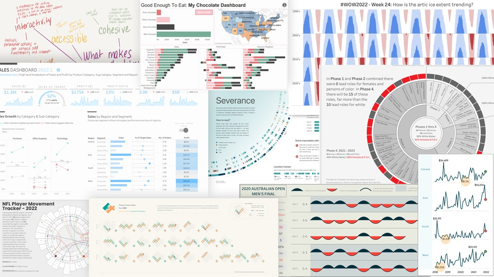
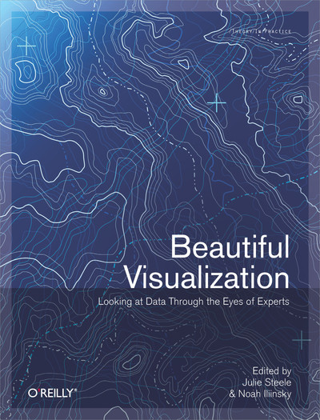
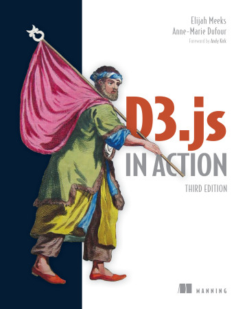
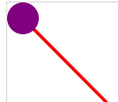

<img src="images/JS_visual_courses.png" style="float: right; max-width: auto; height: 300px;"/> ## ITEC 4220 - Advanced Data Analytics ### Module 6 - Interactive visualization dashboards #### Cengiz Gunay, Fall 2023
### Commercial tools: Tableau and Power BI [Tableau](https://www.tableau.com/) & [PowerBI](https://powerbi.microsoft.com/en-us/) skills are highly sought-after. 
### Tableau tutorials: - [Official tutorial](https://www.tableau.com/learn/tutorials/on-demand/getting-started?playlist=554268) - [LinkedIn Tableau Essentials Training (2020.1)](https://www.linkedin.com/learning/tableau-essential-training-2020-1/change-the-summary-operation?u=76116202) - [Getting Started](https://help.tableau.com/current/guides/get-started-tutorial/en-us/get-started-tutorial-home.htm)
### Power BI is part of Office 365 - [Open it here](https://app.powerbi.com/) - [Video tutorial](https://www.youtube.com/watch?v=TmhQCQr_DCA) - [Microsoft Learn tutorial](https://learn.microsoft.com/en-us/power-bi/fundamentals/service-get-started)
### Beautiful visualization - By Julie Steele, Noah Iliinsky [Chapters 1-2](https://learning.oreilly.com/library/view/beautiful-visualization/9781449379889/) [](https://learning.oreilly.com/library/view/beautiful-visualization/9781449379889/)
### Chapter 1. On Beauty - Novel - Informative - Efficient - Aesthetic
### Classics - Periodic table - London underground map - What makes them special - Why imitations are not good
### Advice for achieving beauty - Think outside of defaults - Make it informative, efficient, and aesthetical On to Chapter 2.
### Custom Interactive Graphs in Javascript <iframe width="100%" height="600" frameborder="0" style="background: white;" src="https://observablehq.com/embed/@cengique/ggc-it-course-prereqs?cell=*"> </iframe>
### Custom Interactive Graphs in Javascript - Like [PowerBI](https://powerbi.microsoft.com/en-us/) and [Tableau](https://www.tableau.com/), but build **custom** graphs - Already on the web, can read CSV/JSON - Popular libraries: [Vega-Lite](https://vega.github.io/vega-lite/), [ChartJS](https://www.chartjs.org/), [Plotly](https://plot.ly/javascript/), [Google Charts](https://developers.google.com/chart/), ... - But most extensive, award-winning library: [D3.js](https://d3js.org/what-is-d3)
### D3.js: Interactive Javascript visualization library <iframe src="https://d3js.org/" width="100%" height="600"></iframe> (Open [D3js.org](https://d3js.org/) or sandbox on [Observable](http://observablehq.com/) )
Follow along here <iframe width="100%" height="500" src="https://jsfiddle.net/rdqa5w26/embedded/" frameborder="0" loading="lazy" allowtransparency="true" allowfullscreen="true"></iframe> Or on [CodeSandBox](https://codesandbox.io)/[CodePen](https://codepen.io/pen)/[MDN](https://developer.mozilla.org/en-US/play)/[W3Schools](https://www.w3schools.com/js/tryit.asp?filename=tryjs_editor).
### Textbook: [D3.js In Action (third edition)](https://www.manning.com/books/d3js-in-action-third-edition)  [Ch 1](https://livebook.manning.com/book/d3js-in-action-third-edition/chapter-1) content: - HTML & DOM - SVG: line, rectangle, circle, text, grouping - CSS - Javascript: - method chaining - lambda functions and callbacks - arrays, JSON: `forEach`, `map`, `filter`, `find`
### Tutorial with live examples: [D3 in Depth](https://www.d3indepth.com/gettingstarted/) Sections: - Getting Started - Selections - Data joins - Enter, exit, & update - Scale functions - Shapes - Axes - Data requests - Transitions
### D3.js tutorial #1: text, lines, and circles Reading: Textbook [D3.js in Action](https://www.manning.com/books/d3-js-in-action#toc) - Follow: [Hello World in D3.js](http://cs.wellesley.edu/~mashups/pages/am5/d3tutorial1.html) 1. Create a file on your computer and follow the tutorial. 2. OR use [JSfiddle.net](https://jsfiddle.net/), select "D3 3.x" in the JavaScript window.  More info: [D3.js v3.x API docs](https://github.com/d3/d3-3.x-api-reference/blob/master/API-Reference.md)
### D3.js tutorial #2: visualizing data Follow: [Working with Data](http://cs.wellesley.edu/~mashups/pages/am5/d3tutorial2.html) To work locally in your computer: 1. Download [VS Code](https://code.visualstudio.com/). 1. In VS Code, download the [Live Server](https://marketplace.visualstudio.com/items?itemName=ritwickdey.LiveServer) extension. 1. Open a folder with VS Code and create an HTML file to work with. 1. Then click on "Live Server" on bottom right to open in browser. OR to work on the cloud: 2. Create an account on [Plunker](https://plnkr.co). 1. You will need to right-click in folders to create the data files. 1. Once created, paste the data in them.
< Home